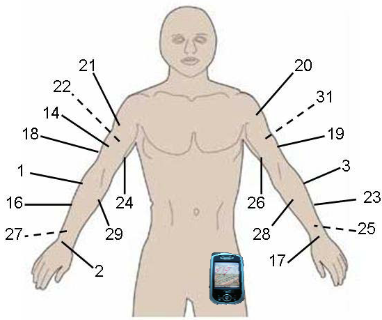
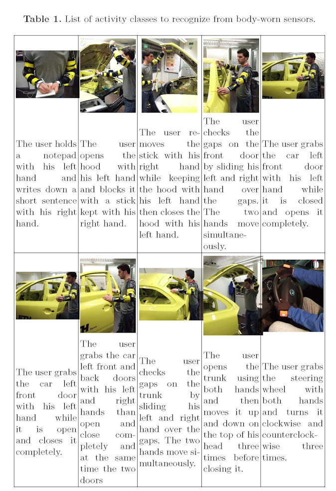

Activity
recognition dataset - Skoda Mini Checkpoint
Daniel Roggen, Wearable Computing Laboratory, ETH Zurich
droggen@gmail.com
Initial documentation: 24.03.2009
Last updated: 06.09.2010
Description
This dataset contains 10 manipulative gestures performed in a car
maintenance scenario.
They are a subset of the 46 activities performed in the factory in one
of the quality control checkpoints [Stiefmeier07]
This dataset was initially collected to investigate the use of ensemble
classifiers (fusion of multiple classifier decision operating on
individual sensor nodes) in activity recognition.
In particular: resilience to faults; performance scaling with number of
sensors, power-performance management [Zappi07,Zappi08].
Availability
This dataset can be freely used in publications provided the following
paper is cited: [Zappi08].
Sensors
This dataset contains 10 classes, recorded with a 2x10 USB sensors
placed on the left and right upper and lower arm.
The locations of the sensors on the arms is documented in the figure.
Note that the numbering of the sensors on the arms has been partially
lost.
This means we don't know from the dataset which is the datastream
corresponding to the locations indicated in the figure. Left or right
hand is known. (There is a small subset for which the placement is
actually known. Contact us to inquire about this.)

Activities
- 10 manipulative gestures in activities in car maintenance
- 1 subject
- 70 instances per activities
- Recording is about 3h long.

Files
Dataset original cleaned
right_classall_clean.mat and left_classall_clean.mat: matlab .mat files
with original datafor right and left arm sensors
Load into matlab with the load command.
Variables loaded: right_classall_clean and left_classall_clean
Matrix format: one line per sample.
- Column 1: label
- Column 2+s*7: sensor id
- Column 2+s*7+1: X acceleration calibrated
- Column 2+s*7+2: Y acceleration calibrated
- Column 2+s*7+3: Z acceleration calibrated
- Column 2+s*7+4: X acceleration raw
- Column 2+s*7+5: Y acceleration raw
- Column 2+s*7+6: Z acceleration raw
with s=0...29 are the sensor axis (10 3-axis sensors = 10x3 = 30 axis).
Sensor node number is mod(s,3).
Calibrated acceleration means acceleration in milli-g units (1000 =
earth gravity vector).
Raw acceleration is ADC readout.
label value:
- 32 null class
- 48 write on notepad
- 49 open hood
- 50 close hood
- 51 check gaps on the front door
- 52 open left front door
- 53 close left front door
- 54 close both left door
- 55 check trunk gaps
- 56 open and close trunk
- 57 check steering wheel
Dataset segmented
dataset_cp_2007_12.mat: segmented dataset
Load with matlab load command.
Variables loaded: dataset_left, dataset_right
Variable format:
dataset_xx{axisnumber}{classnumber}{instancenumber} is a vector with
calibrated acceleration data; length of vector is gesture length
dependent.
References
- [Zappi07] P. Zappi, T. Stiefmeier, E. Farella,
D. Roggen, L. Benini, and G. Tröster. Activity
Recognition from On-Body Sensors by Classifier Fusion: Sensor
Scalability and Robustness. In 3rd Int. Conf. on Intelligent
Sensors, Sensor Networks, and Information Processing (ISSNIP),
pages 281-286, 2007.
- [Zappi08] P. Zappi, C. Lombriser, E. Farella,
D. Roggen, L. Benini, and G. Tröster. Activity
recognition from on-body sensors: accuracy-power trade-off by dynamic
sensor selection. In R. Verdone, editor, 5th European
Conf. on Wireless Sensor Networks (EWSN 2008), pages 17-33.
Springer, 2008.
- [Stiefmeier07] T. Stiefmeier, D. Roggen, G. Tröster. Fusion of string-matched templates for
continuous activity recognition. In 11th IEEE International Symposium on
Wearable Computers. pages 41-44, 2007